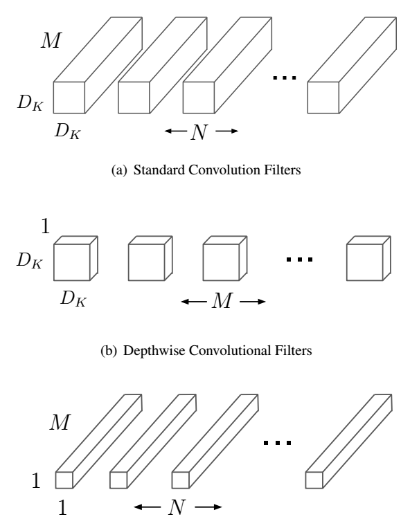
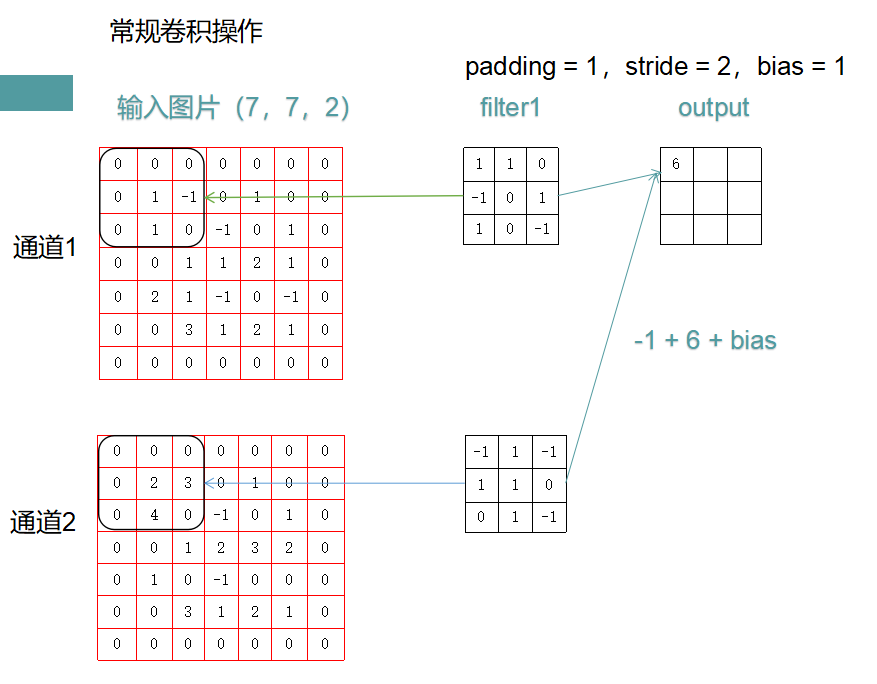
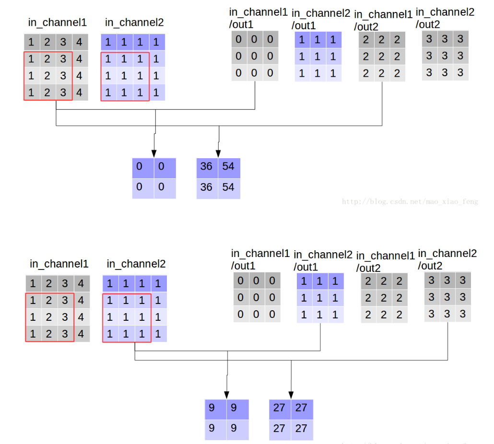
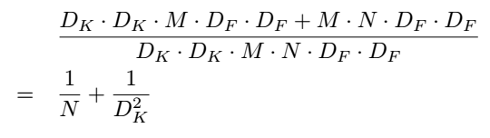

MobileNet学习
MobileNet学习心得——一种高效轻量神经网络
这是我的第一篇博客。不把自己学到的东西写下来，始终感觉和没学到似的。希望把自己所认识的记录下来，转换成自己真正拥有的~ 我不想用很官方的语言来些东西，我想用自己的话把道理讲清楚。
首先这个MobileNet的论文是谷歌于2017年发表在archive上的，现在时间过去了一年，MobileNet已经有了V2，但是核心是一样的——深度可分离卷积。话不多说，我们一起来看一下深度可分离卷积是个什么情况：

深度可分离卷积可以分成深度卷积核逐点卷积两个部分
我们先不管这两个卷积，先看一下常规卷积操作：

输入图片是(7,7,2)，也就是7×7大小2通道的图片，经过1个2通道卷积核的作用得到一个1通道的output。而现实情况是卷积核(filter)的个数会很多，一般比通道数多很多，而output的通道数其实就等于用于卷积的卷积核个数了。
为了加深理解，我用tensorflow进行了一个很简单的实践：1
2
3
4
5
6import tensorflow as tf
img1 = tf.constant(value=1,shape = [1,7,7,3], dtype=tf.float32)
filter = tf.constant(value=1, shape=[5,5,3,6],dtype=tf.float32)
out_img = tf.nn.conv2d(input=img1, filter=filter, strides=[1,1,1,1], padding='VALID')
print(out_img.shape)
这里提一下输入图像和卷积核的shape是有区别的。首先shape定义出来的都是张量（关于张量的解释，知乎上有一个答主说的很清楚：张量）
我怕我解释不好误导了你。不过对于图像来说这种低维的东西还是很好理解的。
- 在tensorflow中的输入图像的shape是四阶的，分别代表[batch_size, in_height, in_width, in_channels]
- 卷积核也是四阶的，分别代表[filter_height, filter_width, in_channerl, out_channels]
在常规卷积的情况下，上述代码的out_img.shape打印出来的结果是[1,3,3,6]
了解了常规卷积之后，我们可以来看看深度卷积是什么：

这张图是横着的，我们比较习惯于看竖着的，不过没关系，道理都是一样的。左边的是输入图像，这是一幅2通道的图像，右边分别是2通道的两个filter。深度卷积的卷积操作就是filter1的第一通道与输入图像第一通道做卷积，得到一张feature map，filter2的第一通道与输入图像第一通道做卷积，得到另一张feature map。以此类推，图中的卷积总共得到4张feature map。然后我们来看一些简单的代码实现：1
2
3
4
5import tensorflow as tf
img1 = tf.constant(value=1,shape = [1,7,7,3], dtype=tf.float32)
filter = tf.constant(value=1, shape=[5,5,3,6],dtype=tf.float32)
out_img = tf.nn.depthwise_conv2d(input=img1, filter=filter, strides=[1,1,1,1], padding='VALID')
print(out_img.shape)
上述代码的输出结果是[1,3,3,18]，多尝试几次，我们不难发现，深度卷积的输出结果的通道数完全就是输入图像的in_channels与filter的out_channels的乘积好嘛！官方给出的解释是输出通道=in_channels * channel_multiplier，其实channel_multiplier也就是filter的shape中定义的out_channels了。
可是，还是有人提出疑问，从MobileNet的论文中给出的概念图（文中第一幅图）来看，深度卷积核的每一个滤波器的通道数根本就是1，而测试代码用的滤波器的通道数必须和输入图像的通道数一致，否则会报错！这是为什么呢？也就是说，如果按照概念图的方式来做卷积，将会是一个怎样的情况呢？
会报错
所以我们不能像测试常规卷积一样来测试深度卷积，因为按照论文中所述的原理，是每一个单通道卷积核对输入图像的每一个通道做卷积的，这就是一个filter对应channel的形式，所以说，和图一说的一样，输入图像有几通道，深度卷积核就有几个。这样的结果就是牺牲了卷积核个数（因为通常情况下卷积核个数会多于图像通道数），但是减少了计算复杂度。
[1,7,7,3]要拆分成3个[1,7,7,1]，分别与3个不同的filter[5,5,1,1]做卷积，得到3个feature map，这3个feature再做逐点常规卷积。
对深度卷积做测试的时候，如果要像图中用单通道的卷积核来处理的话，在代码实现的时候，要把输入图像的shape的通道拆分，比如有M通道就拆成M个张量，这些张量堆叠在一起才形成原图像。这些各个通道的图像与不同的单通道深度卷积核分别做常规卷积，所以说计算复杂度是DK×DK×M×DF×DF就没问题了。
接下来看深度可分卷积，其实就是做完深度卷积之后，再用1*1大小的卷积核来对输出的特征图做一次常规卷积实现降维，提升网络的表达能力。
1
2
3
4
5
6 import tensorflow as tf
img1 = tf.constant(value=1,shape = [1,7,7,3], dtype=tf.float32)
filter = tf.constant(value=1, shape=[5,5,3,6],dtype=tf.float32)
point_filter = tf.constant(value = 1,shape = [1,1,18,4],dtype=tf.float32)
out_img = tf.nn.separable_conv2d(input=img1, depthwise_filter=filter,pointwise_filter=point_filter, strides=[1,1,1,1], padding='VALID')
print(out_img.shape)
separable_conv2d函数比之前多了一个逐点卷积核参数，其实你完全可以调用一次深度卷积，再调用一次常规卷积来实现separable_conv2d。
MobileNet的核心部分讨论完了，现在讨论一下计算复杂度问题（这也是令MobileNet作者引以为豪的东西(:з)∠)）
论文中给出的公式如下：
分子是深度可分卷积的计算复杂度，分母是常规卷积的计算复杂度。DK是输入图片尺寸，DF是输出图片尺寸，M是卷积核通道数，N是卷积核个数。从结果看，确实比常规卷积快了不少~但是也因为滤波器个数的减少，导致精度有一定的下降~（复杂度公式不能按照代码上定义的张量来算，这只是表面的一个现象，真实情况是代码上面的加黑字体…）